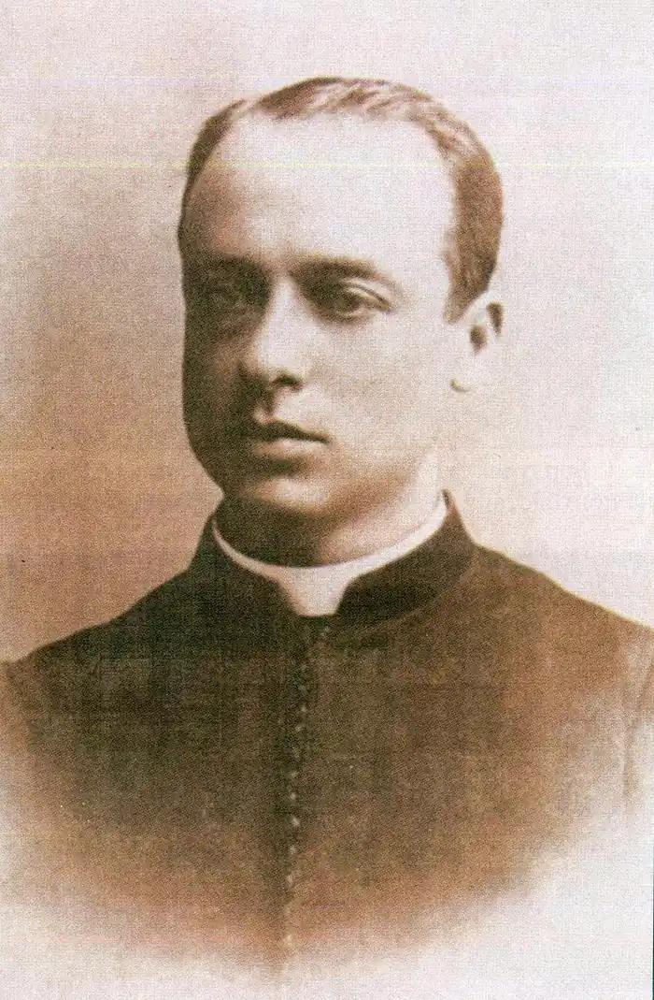

(1863 — 1936)
Тимофій Гнатович Бордуляк народився 2 лютого 1863р. в с. Бордуляках, Бродівського повіту на Львівщині, в селянській родині.
Вчився у Львівській українській гімназії і на богословському факультеті Львівського університету, після закінчення якого був священиком і вчителем у різних селах Західної України. Літературну працю розпочав у 1887р., надрукувавши в журналі "Зоря" вірш "Русалка". В 1899р. у Львові вийшла збірка оповідань письменника "Ближні". В 1903р. у Києві видано книжку "Оповідання з галицького життя", в якій передруковано більшість творів першої збірки. Після того письменник опублікував у періодичних виданнях ще сім творів ("Жура", "Передновок", "Прохор Чиж" та ін.). Помер Тимофій Бордуляк 16 жовтня 1936р. в с. Велика Ходачка на Тернопільщині.